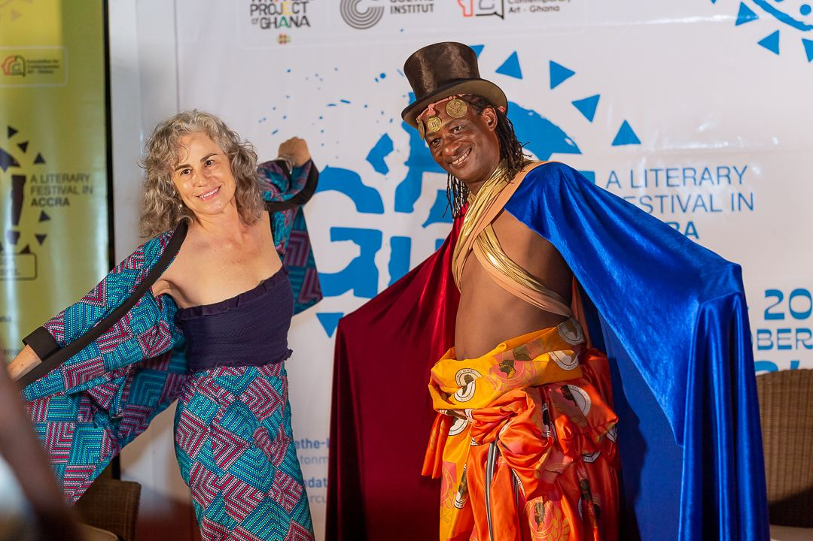

Festivals · Culture
Pa Gya! A Literary Festival in Accra
- Dates
- Dates TBA
- Venue
- Goethe-Institut Ghana and Foundation for Contemporary Art–Ghana, Cantonments (last official 2026 venues)
- Location
- Accra, Ghana
- Format
- In-person
- Category
- Culture
- Industry
- Literary festival
- Organiser
- Writers Project of Ghana
- Official website
- https://writersprojectghana.com/pagya/
About
Official Writers Project of Ghana archive (fetched 24 Nov 2026) lists the 10th edition, 16–18 October 2026, at Goethe-Institut Ghana and Foundation for Contemporary Art–Ghana, Cantonments — now past. Annual festival since 2017; no official 2027 dates. Organised with Goethe-Institut Ghana and FCA–Ghana. Ghana dates are local (Greenwich Mean Time, GMT, Africa/Accra, UTC+0, no daylight saving).
Topics: literature, readings, workshops, film, exhibitions.
No organiser attendance figure found on the official pages checked (24 Nov 2026). Ranked by an estimated size tier 'medium' (our judgement from format, venue and scale, not an official number).